| Рекомендация: User-Experience Element |
 |
|
| Связанные элементы |
|---|
IntroductionUser-Experience Elements are the major modeling element of the Work Product: User-Experience Model. There are two main types of User-Experience Elements: screens and input forms. The elements that are modeled for a screen include the business logic content that is displayed on the screen, as well as the actions that can be performed on the screen. Screens may also include input forms, where the user may enter user-supplied content. These guidelines provide modeling conventions and recommendations for representing the User-Experience Elements. For specific checkpoints, see Checklist: User-Experience Element. General Screen GuidelinesScreens are modeled as classes with the <<screen>> stereotype. Every screen should have a name and a brief description. These are the two most important pieces of information about a screen. At a very high level they identify the screen's intent and scope. Optionally, a sketch of the GUI (in an appropriate format - BMP, JPEG) may be associated with the <<screen>>. Such a sketch provides a graphical representation of the screen. The goal for modeling screens is that, when looking at a diagram containing the <<screen>> class with all attributes and operations displayed, the following is apparent:
For example, in the screen class shown below:
For more information on each of these screen elements, see the specific sections below: user actions, dynamic content and messages). 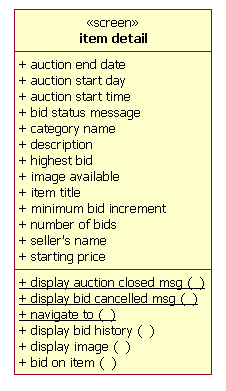 The following are some additional recommendations for screens:
For some general guidelines on the creation of user-interfaces, see Guideline: User Interface (General) ("screen" and "window" may be considered synonymous in the context of these guidelines). The screens should reflect the guidance provided in the project-specific guidelines. Identifying ScreensThe following are some suggestions for identifying screens:
For each identified screen, provide a name and a brief description that conveys the screen's purpose and usage. Also, make a first pass at defining the dynamic content that is to be contained on the screen, as well as the user actions that the user can perform on the screen. If the user must enter information into the system, be sure to define the necessary input forms. Provide a brief description for identified dynamic content and user actions. Remember, the User-Experience Model is intended to be contract between the user-experience and the engineering teams, and the dynamic content is the key integration point. Thus, it is important that it is unambiguously documented. Strive to minimize the number of screens, thereby also minimizing the screen navigation paths. For more information on navigation paths, see Navigation. Screen ContentScreen content is the generic term for business information that appears on a screen. It is a combination of static content, dynamic content , and user-supplied content.
Static content is information that is provided by the presentation logic (as opposed to the business logic) of
the system. Some examples include: overall screen structure, field names, titles, text, images, client-side scripts,
and client-side compiled elements that are constant for each user of the system.
Dynamic content is the dynamic information provided by the business logic of the system, as opposed to the
presentation logic. The values of the dynamic content can (and usually do) change for each user of the
system. Some examples of dynamic content include:
Dynamic content is where the presentation world meets to engineering world. Dynamic content is the responsibility of the business logic team to produce, and the presentation logic/user-experience team to organize and present. For more information on dynamic content, see Dynamic Content. User-supplied content is entered via input forms that are part of a screen. For more information on modeling input forms, see Input Forms. Dynamic ContentAs described earlier, dynamic content is dynamic information provided by the business logic of the system, as opposed to the presentation logic. It is the responsibility of the business logic team to produce, and the presentation/user-experience team to display on a screen. It is available to the User-Interface Designerwhen structuring the screen. Dynamic content is represented as attributes of the <<screen>> class. Dynamic content represents the state of the screen. Since the <<screen>> class is an analysis-level modeling element, expressing the dynamic content of the screen can be relatively free-formed. Strict data types and valid identifier names are not necessary to convey the dynamic content of the screen (such information is better expressed in the detailed Design Model. In the User-Experience Model, it is sufficient to identify the dynamic content by name and provide a short description. Data typing the attributes is optional and should only be done to help clarify the nature of the item, and should not be interpreted as a design model decision. Broad categories for dynamic content data types should be used (String, Numeric, Image, Date, Currency, etc.), instead of language specific types (i.e. Long, Short, etc.). Sometimes the dynamic content is a little "richer" than a singular piece of content. In such cases, "content bundles" may need to be defined. For example: Think of a shopping cart screen. The dynamic content is the line items and total price. The total price is a singular piece of content. The line items, however, each contain a product id, name, quantity, unit price and line item total price (i.e., each line item contains multiple content pieces). There are zero or more line items in a shopping cart, and this multiplicity must be the same for all of the line item discrete pieces. For example you can't have two product ids, one product name, 6 quantities, etc. Thus, the line item content pieces are bundled together in a single class, so that a single multiplicity can be shared by all line item content pieces. Content bundles are modeled as a class(es), with the dynamic content of the bundled modeled as attributes of the class. A composition relationship is drawn from the <<screen>> class to the content bundle class. A special stereotype is not defined and applied for these "content" bundles. However, they can always be recognized by their context - they are always owned by a screen. An example of a content bundle, active auction, is shown below. In this case, information on all auctions a user has open is displayed on the user's home screen. Every active auction has an item name, starting price, minimum bid increment, auction start date, auction end date, and an auction tracking number. 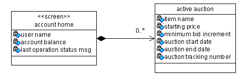Content that has a variable number of elements (i.e., list content) can be expressed with array notation. Sometimes the content's multiplicity is variable, as might be seen in a product catalog with multiple categories of products. In this situation, the content attribute is represented with array notation, using a pair of square brackets after its name (i.e. [ ] ). See the figure below: 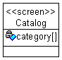 The level of detail should be appropriate to the intended audience. If the audience is unfamiliar with UML, and is unlikely to adopt it, then it is best to eliminate some of the details, and use either array notation for bundled content or simply use plural terms, and ensure that the screen and attributes documentation describe the nature of the dynamic content sufficiently for the engineering and testing teams. Input FormsAn input form is a part of a screen that contains a collection of user input fields (i.e., user-supplied content). Input forms allow the user to enter information into the system. Input forms are processed by the application's business logic. Input forms are modeled as classes with a stereotype of <<input form>>. The <<input form>> stereotype uses the possibly redundant term "input" to emphasize the role of the class it stereotypes -- it accepts user input. The name of the input form should reflect the data that is being entered on the form, and "form" should be included as the last word in the class name (e.g., "account info form"). Input form fields are modeled as attributes on the <<input form>> class, and can be specified with an optional data type indicating the type of input element (i.e. Text, TextArea, Radio, Checkbox, Select, File). Separate <<screen>> and <<input form>> classes are needed because they represent two very different things. One is application content (<<screen>> class) and the other is user input (<<input form>> class). In many cases there will be a close correlation, but not always. A single screen can contain multiple input forms. The relationship between screens and their input forms is modeled as a composition relationship from the <<screen>> class to the contained <<input form>> class(es). The composition representation emphasizes the ownership relationship between the <<screen>> and the <<input form>> (A screen "owns" its input forms; input forms always appear in the context of screens). 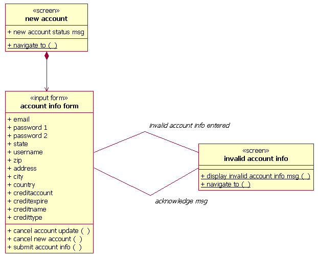
It is also possible to show the <<input form>> as a shared class, being contained by multiple
<<screens>>. 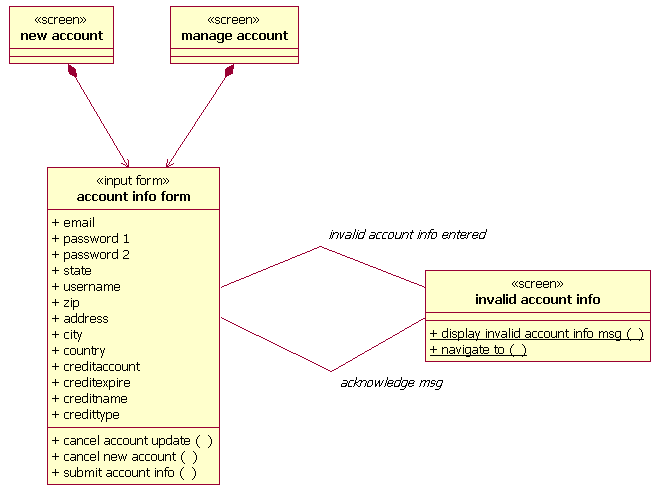 If an input form is not going to be shared across screens, the <<input form>> class may be modeled as a nested class (nested within the "parent" <<screen>> class). If an input form needs to be pre-populated with default values that the user can then change, the following should be modeled:
These modeling recommendations are demonstrated in the following diagram. In this diagram, the manage account screen contains an input form where the user can enter the account information to be changed. The input form is to be pre-populated with user's existing account information. Thus, input form fields are defined on the <<input form>> class for the information to be entered by the user, and dynamic content is defined on the <<screen>> class for those input form fields for which default content is to be provided (username, email, creditname, etc.). Notice, no default value will be provided for the user's email address. 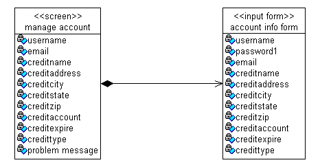 ActionsActions are things that can be done to a User-Experience Element. Actions are modeled as operations on the User-Experience Elementclasses. There are two categories of actions, user actions and environment actions. Each of these is discussed in more detail below. User ActionsA user action is a user's request for an action by the system. User actions define how the user interacts with the screen (i.e., user actions are those things that a user can "do" to the screen or input form). A user action is different than entering information into an input form. Some options for user actions include:
When identifying user actions, look for requests the user makes of the system, including responses to requests made by the system to the user. Also, if a screen is to contain a large amount of information, some additional user actions may need to be defined to manipulate the large information set. Some examples of such user actions may include:
Refer to Guideline: User Interface (General) for more detail. A user action is modeled as an operation on the User-Experience Model element class (e.g., <<screen>> or <<input form>> class). The name of the operation should reflect the user action. The modeling of user actions is demonstrated in the following diagram. The item detail screen contains information on an item that is available for auction. The actions the user may perform on the screen are: placing a bid on the item (bid on item()), displaying the bid history (display bid history()), or display the image of the item (display image()). 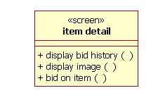 Environment ActionsEnvironment actions are those actions that the "environment", as opposed to the user, performs on a screen (for a web application, the "environment" is the web browser). Since the User-Experience Model is an analysis-level model, we don't want to get too carried away with modeling things that the environment does (during user-experience modeling, we are mostly concerned with things that the user does). However, the fact that screens are created/displayed is important in analysis. We just don't care how it is done. Thus, screen creation/rendering is modeled using static operations on the <<screen>> class (the operation is underlined). Input forms are assumed to be created when their "owning" <<screen>> class is created, so static operations are not modeled for <<input form>> classes. The environment supports the user's navigation to a screen and the display of a message on a screen (for web applications, the screen content is prepared on the server for display/rendering on the client). In both cases, the end result is a screen being created/rendered for display. Thus, there are two types of static operations that usually get modeled for <<screen>> classes, "navigate to" and "display" operations.
In general, all <<screen>> classes should contain a "navigate to()" operation. If a message needs to
be displayed on a screen, then the screen should contain a "display()" operation, one for each message to be
displayed. The use of both the navigate to() and display() operations are shown in the following diagrams. In this example, there is a screen that contains information for an item that is available for auction. A request to bid on the item can be requested from the screen. The Buyer requests to bid on the item whose information is displayed, but the auction has already closed. The environment supports the navigation to a new instance of the item detail screen that contains an "auction closed" message.
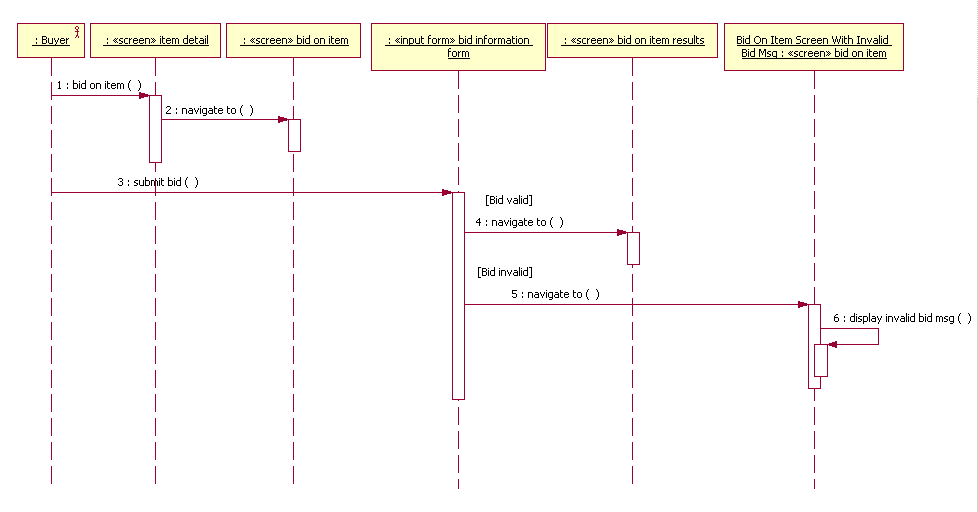
The rationale for using static operations to model the displaying of messages to the user is that the displaying of a
message on a screen involves the rebuilding of the screen (another screen instance) that contains the message. A client
merely browses (navigates to a screen); the infrastructure/system displays the message when the page is rendered. Some may argue that environment actions do not need to be modeled at all since creation/navigation to necessary for all screens. However, modeling environment actions as operations allows the User-Interface Designer to associate messages on interaction diagrams with these operations and results in more readable interaction diagrams. Modeling the explicit display() messages allows you to model all the possible messages that a screen can display. This is not (visually) captured anywhere else. You may not be able to get this information from anywhere else, as it is possible to define general "status" message dynamic content fields. Additional guidelines for modeling screen messages is provided below, as well as in the context of developing the interaction diagrams contained within the User-Experience Storyboards. NavigationIdentifying Navigation PathsSome user actions defined for the User-Experience Elements result in the navigation from one element to another (and thus a navigation association in the navigation map). However, every user action does not have to result in a navigation and every navigation is not necessarily the result of a user action. User-Experience Storyboards provide additional clues as to what navigation paths need to be defined. If the storyboard flow diagrams show a navigation from one element to another, then a navigation association should be defined between the elements in the navigation map. For more information on storyboard flow diagrams, see Guideline: User-Experience Storyboard. Strive to minimize the number of navigation paths. In addition to adding needless interaction overhead, screen navigation paths that are too long make it more likely that the user will "get lost" in the system. Ideally, all screens should be "navigate-able to" from a main screen, resulting in a maximum screen navigation length of two. Try to avoid screen navigation lengths greater than three. Modeling Navigation PathsNavigation between User-Experience Elements is modeled as a directed association relationship from the source User-Experience Element to the destination User-Experience Element (e.g., the screen being navigated to). The direction of the navigation can be specified using the navigability property of the association. For navigation resulting from a user action, the navigation association name should reflect the user action that causes the navigation. The following are some suggestions for naming the navigation association:
Not all navigation associations need names. Only name the associations when the names add to the understanding of the diagram (i.e., when the reason for the navigation is not obvious, either from the context or the classes on either end of the association). An example of when a navigation association name would be needed is if there are multiple user actions (operations) defined for a <<screen>> class, and there are multiple outgoing associations. In such a case, without navigation names, it would be difficult to tell which navigation paths were associated with which user actions. This situation is demonstrated in the following diagram (notice the multiple user actions and outgoing navigation paths for the bid confirmation input form).: 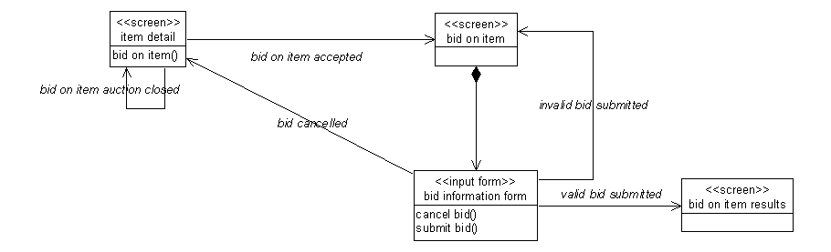 An example of when a navigation association name would not be needed is if there is a screen that contains only one user action and only has one outgoing navigation association. In such a case, it would be fairly easy to associate the single outgoing navigation path with the single user action. This situation is demonstrated in the following diagram:
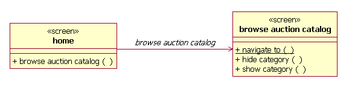 Where an input form is the source of the navigation (i.e., when the user submitting information entered on an input form is what causes the navigation), the navigation association should be drawn from the <<input form>> class to the destination <<screen>> class. The intent of having the form be the source of the navigation is to show which form's values were being submitted for processing. This is important to emphasize because a screen can contain multiple input forms, each submitting themselves separately. There is no navigation from the <<screen>> to it's contained <<input form>> classes -- the <<input form>> is rendered at the same time the <<screen>> is. The following example demonstrates the navigability guidelines:
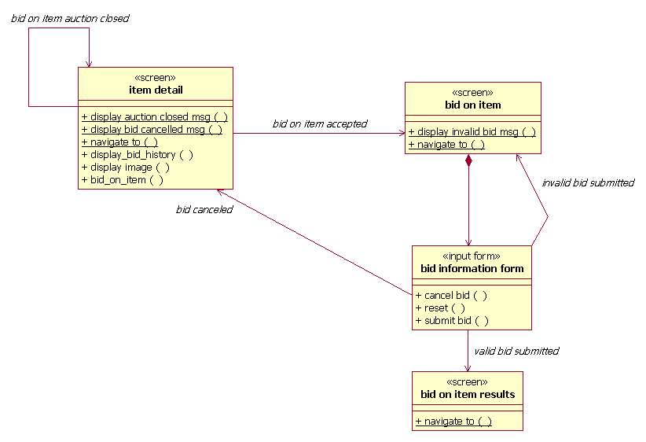 Reflexive navigation associations can be defined for screens. Reflexive navigation associations indicate that the user can navigate from one instance of the screen to another instance of the screen, perhaps with some changed/additional information (when the information on a screen changes, another instance of the screen is created). The following diagrams illustrate the use of reflexive screen navigation associations. A reflexive navigation association, "bid on item auction closed" is defined. The name of the association associates the navigation with the user action, bid on item(). The way to interpret this model fragment is that when the user requests to bid on and item for which the auction is closed, the original item detail screen is re-displayed (a new instance of the screen is created) with an "auction closed" message. 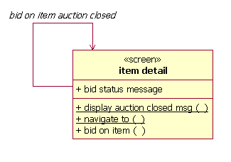 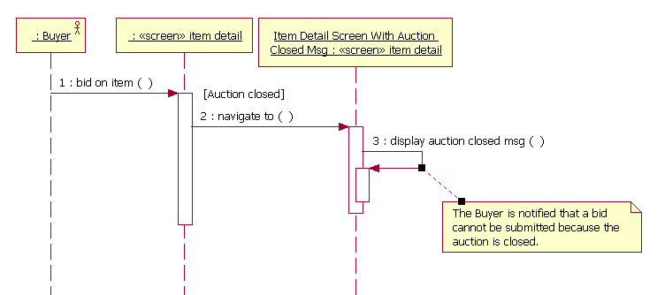 The User-Interface Designer defines the valid navigation paths between the screens. The defined navigation paths must support the execution of the Use Cases. This is validated in the User-Experience Storyboards. These paths are displayed on User-Experience Model Navigation Map diagrams. Thus, the navigation map diagrams display the structure of the User-Experience Model. For information on the consistency rules between the navigation map and the storyboards, see the "Consistency with Other System Models" section in Checklist: User-Experience Model . Modeling Screen MessagesWhen a message needs to be displayed on a screen, the following should be modeled: For the screen where the message is to be displayed:
The following example demonstrates the use of these guidelines: 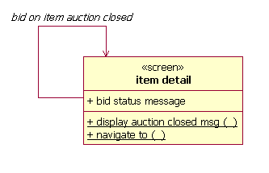 To model the displaying of the message on an interaction diagram:
The following example demonstrates the use of these guidelines:
Special Requirements on User-Experience ElementsSpecial requirements of User-Experience Elements can be:
These requirements are considered requirements that affect the design and implementation of the screen. However, such requirements should be captured in only one place. Thus, the Special Requirements property of a Screen may include references to existing requirements documentation (e.g., Use Cases, Supplementary Specifications, etc.). |
© Copyright IBM Corp. 1987, 2006. Все права защищены.. |